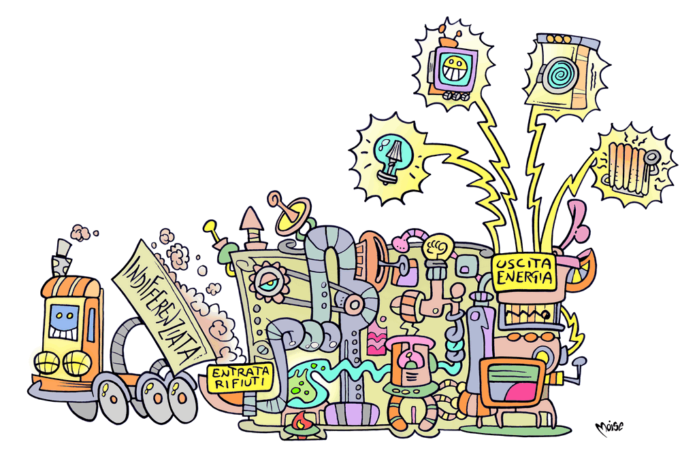
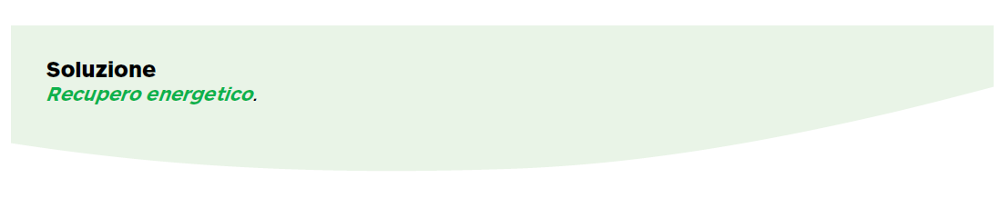

I rifiuti danno energia
E se non si ricicla? Non tutti i rifiuti possono entrare
nella filiera del riciclaggio. Alcuni non sono riciclabili,
altri non finiscono nel giusto contenitore quando
vengono differenziati e risultano inutilizzabili.
In alternativa alla
discarica, tali rifiuti possono essere
termovalorizzati.
I
termovalorizzatori si differenziano dai vecchi inceneritori
perchè non si limitano a bruciare i rifiuti, ma valorizzano la materia
producendo energia
elettrica e, in alcuni casi, calore, trasportato alle
case tramite le reti di teleriscaldamento.
Inoltre, le emissioni del termovalorizzatore, grazie
all’evoluzione tecnologica che ha consentito di ridurne
al minimo l'impatto ambientale, risultano per alcuni parametri inferiori a
quelle che deriverebbero dai combustibili fossili che
potrebbero essere utilizzati per produrre energia.

